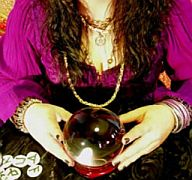

Era una bruja joven aunque sus poderes, aseguraba, eran arcaicos. La mayoría en el escueto salón de espera deseaba el número de la lotería, ansiaba dinero; aunque las ansias por una pareja dominaban, especial pero no exclusivamente, entre mujeres. Dinero para sobrevivir y vivir mejor, parejas para reproducir; la biología evolutiva supeditaba, las sociedades, sus cánones e inopias capitaneaban.
Ninguno de los que esperaba se había ganado jamás una lotería, ni había tenido suerte con sus parejas, por eso estaba la mayoría allí, las brujas, tanto las de los campos y pueblos como las más sofisticadas de la Nueva Era, vienen a ejercer como un tipo de terapia y sus clientes regresan a sus sillones como el psicoanalizado al sofá.
Pero ¿cómo justificar una conducta sin efectos? Imaginemos que el internet no existe. Una persona viene y te lo explica de cabo a rabo, te vende una conexión asegurándote que dentro de poco estarás enlazado al mundo. Pero nada ocurre. Los días pasan y no te conectas, no hay efecto demostrable; no obstante, él ha convencido a unos que aseguran que se conectan, principalmente mientras duermen. Pero tú no lo logras y, mientras tanto, le sigues pagando a la empresa por un internet inexistente (¡ni siquiera lento!). ¿Hasta qué punto eres capaz de aguantar?, ¿cuándo dejas de creer proposiciones extraordinarias sin pruebas ni aplicaciones extraordinarias que las avalen?
Ahora bien, al mover el ejemplo hacia lo supernatural las cosas cambian. Al parecer, la conexión entre neuronas psíquicas es mucho más difícil que enviar información por todo el mundo en menos de un minuto; la física cuántica no se compara con lo riguroso que es para un fantasma manifestarse; precisamente, por eso lo único que tenemos como evidencia son rumores basados en experiencias personales y testimonios.

Se ha demostrado varias veces que las posibilidades de que exista lo conocido como percepción extrasensorial son nulas. En el 2006, por ejemplo, psicólogos en la Universidad de Harvard buscaban medirla. Como todos sabemos, las personas que creen en este fenómeno aseguran que usamos menos de la capacidad cerebral que los psíquicos y por eso no todos la tenemos, así que los investigadores se concentraron en el cerebro. Dispositivos para medir las reacciones cerebrales y observar el flujo de la sangre así como cuestionarios y experimentos de estímulos varios con el objetivo de provocar reacciones distintas fueron usados. John Lindsley, uno de los autores, indica que los resultados presentan la evidencia más clara de la no existencia de la percepción extrasensorial en el cerebro. A lo mejor si la buscan en el hígado…o ¿en el páncreas?
De hecho, otro estudio en mayo de este año realizado por investigadores en las universidades de Missouri y Groningen, Estados Unidos y Holanda, respectivamente, señaló que no existe mecanismo plausible para este tipo de percepción y que, además, contradice con todas las teorías ya sustanciadas en la física y la biología.
“La percepción extrasensorial es ya una imposibilidad dentro del conocimiento científico disponible y, realmente, va en dirección opuesta a la experiencia diaria que percibimos. Nuestro nuevo método estadístico cuantifica cómo las creencias deben cambiar a la luz de los datos y sugiere que estadísticas para personas que sientan o perciban eventos que digan el futuro o que de otra forma no puedan ser anticipados no pueden ser explicados por posibilidades ya que no forman una cantidad suficiente capaz de cambiar de punto de vista a un escéptico”, explica Richard Morey, de Missouri.

Pero no necesito de las estadísticas de Morey ni los experimentos en Harvard para darme cuenta de que no funciona. El telekinético no puede levantar mi mano ni la tuya, necesita de un truco, de una ilusión óptica que diseñe la magia para él. Nadie ha podido leer el futuro ni hacer una predicción tan extraordinaria que no pueda ser explicada por la coincidencia. De hecho, un pequeño paseo por el pasado y presente de la fundación de James Randi permite examinar las evidencias. El equipo de este ingenioso mago se ha pasado años y años investigando a psíquicos, buscando resultados a través de equipos de científicos que se encargan de elaborar experimentos. Randi comenzó ofreciendo 10,000 dólares y hoy va por un millón, nadie se ha ganado un centavo pues nadie ha podido demostrar el poder que todos dicen tener. De hecho, alguna que otra psíquica desertó.
La bruja recomienda un baño de mandarinas. “Prosperidad”, asegura seriamente; explica que la metafísica requiere que los humanos nos interconectemos con el espíritu de la navidad, habla de peticiones y propuestas y explica la diferencia entre ambas: “no es lo mismo pedir un carro rojo para el año que viene que decir voy a trabajar para comprar un carro rojo el año que viene”. La primera, de acuerdo a su activa imaginación, es una forma de participar en un requerimiento con el universo a ver si concede el deseo aunque no se trabaje para hacerlo. Todo, dice ella, es energía.
“Hay que hacer siete peticiones para personas que no son conocidas, hacer siete peticiones por la humanidad, no sólo por ti. Se pide por la resolución del hambre, para que haya paz, el fin de las guerras y así. Luego pides siete para ti, un carro una casa, y siete para amigos y familiares. Es importante, son tres sietes que hacen veintiuno”, afirma.
La bruja no explica el significado de los números. Si estás donde una bruja debes creer en los misterios y, realmente, la mayor parte de la humanidad los ama y supone encontrar las soluciones de sus problemas allí. El único inconveniente es que no lo hacen, no hay ni siquiera una observación indirecta que nos cuente sobre los efectos psíquicos en el ambiente, así como se miden los agujeros negros, ni una hebra de certidumbre que corrobore los hechos más allá del placebo. Miles de años pidiendo, orando, rezando y meditando para que las cosas mejoren…
Por supuesto, los creyentes en poderes extrasensoriales disfrutan de lo turbio. Las experiencias y los testimonios que cuentan están basados en situaciones donde los resultados deben de ser interpretados porque no son claros; la conexión con el más allá ni siquiera sobrepasa el ‘dial-up’ y más bien parece como si el psíquico estuviese adivinando. Y lo está. Los han atrapado en ello, preguntando a través de asistentes, escuchando, estableciendo el escenario para la lectura en frío y las adivinanzas, subrayando las coincidencias y tachando los fallos para alimentar así la creencia de los demás; se han estudiado y analizado horóscopos para comprender, como es obvio, que no predicen la personalidad de nadie y el futuro mucho menos; ninguna de las propuestas psíquicas se ha hecho realidad, ninguno de sus métodos ha demostrado un lazo fuerte con algún otro lado. Sin embargo, la mayoría de las personas en el mundo cree.

Y existen numerosas teorías que explican esas creencias. Podemos exponerlas de forma lineal, comenzando por la biología evolutiva, la estructura genética y neuronal del individuo, su experiencia y los cambios culturales por los que se enfrente y, junto a él y su grupo, la especie completa. Actualmente notamos que el escepticismo nos es útil, especialmente dentro de una sociedad dominada por las ventas y los anuncios publicitarios, por los políticos corruptos y empresas retorcidas, sin embargo, así como las personas exigen un sinnúmero de pruebas para sus farmacéuticos pero no para lo que llaman “medicina natural”, así también pueden ser escépticas en muchas cosas pero creen en las fantasías más ilusorias y no piden evidencias al respecto. Con creer y tener fe les basta, sea a Thor, Alá, Monesvol, Jehová o el Unicornio.
La semana pasada, el centro Goddard de Vuelo Espacial de la NASA publicó las evidencias detrás de las explicaciones sobre por qué el mundo no se terminará en diciembre del 2012 debido a una supernova. Antes de eso explicaron por qué no es racional creer en la existencia del planeta Niburu; aún así, los mitos y teorías conspiranóicas continúan surgiendo y apilándose por todos lados. Cuando pienso en estos fenómenos recuerdo aquel apropiado póster en la serie de ficción sobre extraterrestres Los Archivos X que leía: “Quiero creer”.
El escepticismo que deseamos hacer presente y asequible a todo el que lo busque presenta las soluciones más factibles a las dudas y los misterios con los que te encuentras en la vida; es una forma de establecer niveles equilibrados dentro del inconsistente quehacer humano y llevar a la persona a explicaciones serias y bien ilustradas que de por sí son realmente fascinantes.
Lo inexplicado no quiere decir inexplicable
No creas afirmaciones sin evidencias

Muchos ateos, agnósticos, budistas, individuos con un dios personal y sin agendas religiosas estrictas suelen alojar admiración por Carl Sagan. Era un científico carismático, con ideas brillantes y una fluidez y discernimiento en sus escritos y documentales majestuosos. Sagan era un astrónomo, autor y escéptico que se deleitaba con las maravillas descubiertas más allá del planeta; entre sus objetivos, la transmisión de esos prodigios era parte significativa de su profesión. Su muerte, un día como hoy en 1996, se conmemora con el Día Mundial del Escepticismo.
Los escépticos nos explican que tenemos la tendencia de creer lo que deseamos que sea verdad y asumimos esta verdad que deseamos sin evidencias. Es una fuerza poderosa que no ve fin y que se encuentra distribuida desequilibradamente por todo el mundo, en algunos lugares representa tu vida, creas o no en dioses. El escepticismo es una postura que duda ante cualquier afirmación carente de evidencias y sostiene las posiciones que traen resultados. Un sinnúmero de científicos en áreas distintas se ha tomado el tiempo para explicar sus descubrimientos, sus fallos, sus limitaciones y genialidades. La idea es que la información esté presente si alguien la desea, que se encuentre disponible una dilucidación analizada y sustentada en pruebas pues muchos iremos a leerla. ¿Produce ese hombre arena?, ¿cura esa mujer el cáncer con reiki?, ¿puede ser la energía manipulada por un círculo de personas?, ¿afecta tu humor? Las respuestas, más allá de ser negativas, brindan una forma prevenida y suspicaz de abordar los temas. Como escribió el psicólogo Michael Shermer en su libro “Por qué las personas creen cosas raras”:
“En sus años tempranos, los niños son como adictos al conocimiento, lo cuestionan todo aunque exhiben poco escepticismo. La mayoría no llega a aprender a distinguir entre curiosidad y credulidad. Hoy, el escepticismo moderno desea ayudar a resolver estos conflictos, por eso está representado en el método científico, que involucra la recopilación y colección de información para formular y demostrar explicaciones naturales a los fenómenos. En ese sentido, una afirmación se convierte en un hecho cuando es confirmada a tal extremo que es razonable llegar a un acuerdo temporal sobre la misma”.
No se puede creer una afirmación como verdad sin evidencias; no, mientras no sea demostrada su aplicabilidad, veracidad y certeza a través de experimentos. La ciencia que tenemos hoy es fallida, los científicos, como todos nosotros, están atados a rasgos y variables que no podemos controlar. Han sido estas características las que originaron la producción del método científico y, aunque no todo ha sido demostrado, un noble “no sé” o “ya veremos” son tan refrescantes como un frío vaso de agua en días de calor.
Sé escéptico, es conveniente. ¡Feliz día!
Volver al índice de la Lupa Herética
© 2008-2026 Glenys Álvarez y Sin Dioses. Prohibida la reproducción con fines comerciales.
Comentarios
Comments powered by Disqus